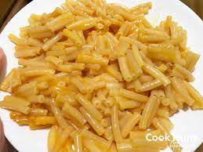

Easy Kraft Mac n' Cheese

Recipe
This mac n' cheese is an easy addition to your dinner!
Ingredients
- 6 cups water
- 4 tablespoons butter or margarine
- 1/4 cup milk
Steps
- Boil water in medium saucepan
- Add in macaroni and cook for 7-8
minutes, stirring occasionally
- Drain DO NOT RINSE
then return to pan
- Add margarine or butter, milk, and
cheese sauce mix
- Stir well